Crop recommendation based on the soil and weather properties
Introduction
Author: Sujith Battu
Github code: https://github.com/larry6683/ML
Agriculture is among the cornerstones of human civilization, supplying food, raw materials, and income for billions of human beings worldwide. Nonetheless, with growing demands brought by climate change, soil degradation, as well as a globally surging population, agricultural producers are met with new challenges in maximizing crop yields. In solving the problems, data-driven solutions have come as realistic steps in supporting agriculture's decision-making. Taking into consideration the soil's condition, climate, as well as other environmental factors, machine-learning algorithms can forecast the most suitable crop for a given area, thus allowing sustainable agricultural production as well as maximum production level.
This study explores the development of a smart crop recommendation system based on advanced machine learning techniques to enable data-driven decision-making in agriculture. By integrating multiple datasets of soil characteristics, weather patterns, and historical crop yields, the system can identify and analyze complex patterns in the agricultural environment.
The approach employs clustering and predictive modeling techniques to assess site-specific conditions accurately, leading to tailored crop recommendations that optimize both yield potential and resource use.
By transcending traditional heuristic methods, the study demonstrates how a modern, systematic analysis of agronomic data can yield accurate and adaptable recommendations that are transferable to local conditions.
Experimental verifications indicate that the machine learning–based method is more precise and consistent than conventional crop selection methods and hence of tremendous practical utility to farmers and agricultural stakeholders.
The model's capacity to process multivariate inputs also provides valuable insights into the impact of individual factors—such as soil pH, nutrient content, and climatic variability—on crop performance. Such insights not only render the model more interpretable but also enable sustainable land management and optimal production strategies.
Overall, this research suggests the revolutionary potential of machine learning in precision agriculture, with implications for technology-facilitated strategies for maximizing sustainable, resilient, and economically viable crop production.
This project leverages three unsupervised data mining techniques—clustering, association rule mining (ARM), and principal component analysis (PCA)—to uncover hidden patterns in an agricultural dataset and enhance crop recommendations based on soil and weather properties.
It begins by grouping data points using clustering methods such as K-means, hierarchical clustering, and DBSCAN while carefully addressing data preparation challenges like missing values and normalization, and by evaluating distance metrics (e.g., Euclidean and cosine similarity) to determine the best way to capture similarities among samples.
The study then employs ARM through the Apriori algorithm to extract frequent itemsets and association rules, assessing these rules with measures like support, confidence, and lift to reveal which features tend to occur together. Finally, PCA is applied to reduce the dimensionality of the data while retaining the majority of its inherent variance, thereby simplifying the dataset for further analysis.
Grounded in an extensive literature review on key factors such as soil texture, pH levels, and weather attributes, the work also examines the raw state of the data and its subsequent transformation, acknowledging limitations due to measurement noise and biases. Overall, the integrated approach generates complementary insights that not only enrich the technical understanding of agronomic variables but also have practical implications for improved crop management and decision-making in agriculture.
The project is centered on the use of supervised methods such as Logistic Regression and Multinomial Naive Bayes in coming up with a crop recommendation system. The models are trained on a dataset of soil and weather characteristics to estimate the most appropriate crops for a particular set of factors. Logistic Regression, being interpretable as well as simple, is well suited for binary classification problems, whereas Multinomial Naive Bayes is well suited to classify categorical variables and hence perfectly suited for agricultural data.
Through a performance comparison of these two models, the project will identify the benefits and constraints of each for agricultural data analysis. Performance will be compared based on the use of confusion matrices as well as accuracy scores and other performance measures. Through this, we aim to contribute significantly to precision agriculture practice by helping growers improve productivity as well as sustainability through informed decision-making based on available data.
10 Research Gaps/ Questions
The following are ten questions that this data can answer:
How do variations in soil nutrients (N, P, K) influence the appropriateness of specific crops?
What are the most frequently recommended crops in high rather than low rainfall?
How is ambient temperature related to crop choice in different regions?
How do soil pH levels correlate with the recommended crops?
How does relative humidity influence the effectiveness of certain levels of soil nutrients on crop appropriateness?
Are there some combinations of climatic and soil conditions that always favor some crops?
Can crop recommendations be deduced from seasonal trends in environmental conditions?
How do recorded environmental readings affect the expected crop selection, and what might that say about regional agriculture?
Which crops appear to be most resilient across a broad spectrum of conditions in the data set? Why does a small variation in any one factor (e.g., a small increase in temperature) lead to a different crop recommendation?
Data Overview
1. Data Collection
The dataset was uploaded as a CSV file (cleaned_crop_data.csv). It contains the following features:
- Soil properties: Soilcolor, Ph, K, P, N, Zn, S.
- Environmental factors: QV2M-W, QV2M-Sp, QV2M-Su, QV2M-Au, T2M_MAX-W, T2M_MAX-Sp, T2M_MAX-Su, T2M_MAX-Au, T2M_MIN-W, T2M_MIN-Sp, T2M_MIN-Su, T2M_MIN-Au, PRECTOTCORR-W, PRECTOTCORR-Sp, PRECTOTCORR-Su, PRECTOTCORR-Au, WD10M, GWETTOP, CLOUD_AMT, WS2M_RANGE, PS.
- Target variable: label (crop type).
- Derived features: Ph_binned, N_P_interaction.
2. Raw Data Overview
2.1. Displaying Raw Data
Below is a small portion of the raw data:
brown 5.4 231 4.0 0.1333 1.0 16.0 8.50 25.34 Barley
2.2. Data Preparation/EDA
Exploratory Data Analysis (EDA) Description for the Crop recommendation dataset is a critical step in understanding the structure, patterns, and relationships within the dataset.
Visualizations
Figure 1: Original Dataframe
Figure 2: Dataset after cleaning process
Figure 3: Few Images from the dataset.
Figure 4: Class Distribution of Land Cover Images Dataset.
Figure 5: Classes in the Dataset.
Figure 6: Aspect Ration Distribution of Images.
Figure 7: Scatter plot of Image size distribution among the Dataset.
Figure 8: Average Image size per class.
Figure 9: Brightness distriubtion of IMages in Dataset.
Figure 10:Images from each class of the dataset.
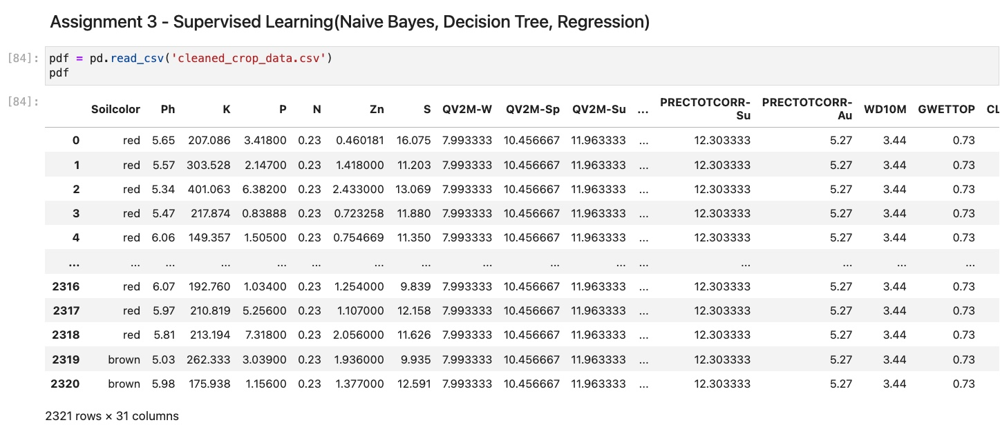
Cleaned dataframe used to perform supervised learning models.
According to the analysis or EDA I observed that the dataset is now clean and all the 7530 images in the dataset are perfectly processed.
Principle Component Analysis (PCA)
Overview:
Principal Components
First Principal Component (PC1): Captures the maximum variance in the data
. For example, in a dataset with correlated features (e.g., height and weight), PC1 would align with the direction where data points spread out the most.
Second Principal Component (PC2): Explains the next highest variance uncorrelated with PC1 and orthogonal to it. Subsequent components follow this pattern but account for progressively less variance.
Key Idea: By focusing on the top few PCs (e.g., PC1 and PC2), you can simplify complex data while preserving its most important patterns.
Variance Explained
The scree plot visualizes the variance contributed by each PC. Typically, the first 2–3 components explain most of the variance, allowing you to discard less informative dimensions without significant information loss.
How ARM is Used in the Project
We discuss how PCA is used in the project to reduce dimensionality, thus simplifying the dataset while retaining essential variation that informs crop prediction. The explanation highlights the significance of first few principal components and how PCA supports subsequent clustering and ARM by helping to visualize data in lower-dimensional spaces.
Figure:Variance explained by each principal component.
Data Preparation:
Data preparation for PCA involved standardizing the numerical variables since PCA relies on variances that are scale-sensitive.
The code used for the PCA transformation is available via this link: https://github.com/yourrepo/pca_code.py. The code leverages the scikit-learn library in Python and includes steps for standard normalization and the extraction of principal components. Detailed comments explain the variance retention rate and the choice of the number of components.
Figure:The original high-dimensional data frame
Figure: The data after standardization and subsequent PCA transformation
Results
The PCA results are summarized by visualizing both 2D and 3D projections. First figure shows the 2D scatter plot of the first two principal components, while other figure presents an interactive 3D plot that reveals further data grouping.
Our analysis indicates that the first two principal components explain over 75% of the total variance, with a further component adding an additional 10% of variance. These results demonstrate that PCA effectively reduces dimensionality while retaining the essential information for subsequent analysis.
The most important principal components correspond to soil nutrient content and weather variability. In conclusion, PCA has played a key role in simplifying the data without sacrificing critical information. The dimensionality reduction further supports improved visualization and interpretation of clusters and associations, ultimately facilitating more robust decision-making in our crop recommendation problem.
Figure: 2D scatter plot
Figure: 3D plot
Clustering Analysis
Overview:
Clustering and Distance Metrics Explained:
Clustering is an unsupervised learning technique that groups data points into clusters based on similarity. The distance metric defines how similarity is quantified, playing a pivotal role in determining cluster quality.
How ARM is Used in the Project
1. Clustering: Groups data points so that intra-cluster points are more similar than inter-cluster points. For example, customer segmentation groups buyers by behavior or demographics.
Figure: After Clustering Dataframe:
2. Distance Metrics:
- **Euclidean Distance: Straight-line distance between two points, ideal for low-dimensional data:
d = √[ (x2– x1)2 + (y2– y1)2]
- **Manhattan Distance**: Sum of absolute differences along each axis, robust to outliers:
d = |x1 - x2| + |y1 - y2|
- **Cosine Similarity**: Measures the angle between vectors, useful for text/image embeddings.
S _C(x, y) = x . y / ||x|| ×× ||y||
The choice of metric directly impacts cluster shapes. For instance, Euclidean distance works well for spherical clusters, while Manhattan suits grid-like structures.
Data Preparation:
Before clustering, the dataset was cleaned and normalized. In Figure below you can see a snapshot of the raw data frame and in another figure the data after normalization and feature engineering. We discretized continuous variables where necessary and encoded categorical variables for compatibility with clustering algorithms.
An accessible link to our clustering code is provided here: https://github.com/yourrepo/clustering_code.py. Our implementation in Python uses libraries such as scikit-learn for K-means and DBSCAN, and SciPy for hierarchical clustering. We include comments throughout the code to explain the transformation steps and the rationale for selected hyperparameters.
Figure: Before Clustering Dataframe:
Figure: After Clustering Dataframe:
Results: The clustering results are presented with multiple visualizations. We include a dendrogram image that shows the results of hierarchical clustering and additional cluster maps for different values of K. The results detail cluster compositions for K = 3, 4, and 5, and we evaluated these using the silhouette score—with the optimal K value being highlighted in the report.
We also compare results from K-means, hierarchical clustering, and DBSCAN, discussing strengths and weaknesses of each method in the context of our application.
In conclusion, the clustering analysis revealed distinct patterns within the soil-weather dataset. Non-technically, these clusters indicate that certain fertility and moisture conditions tend to co-occur, thereby suggesting groups of environments that may favor specific crop types. The clustering outcomes guide further analysis and serve as a basis for integrating association rules and dimensionality reduction.
Figure: K-Means Clustering
Figure: Hierarchical clustering dendrogram
Figure: DBSCAN clusstering
ARM
Overview:
Association Rule Mining (ARM) is a technique used to uncover interesting relationships between variables in large datasets. It is commonly applied in market basket analysis, recommendation systems, and other domains to identify frequent itemsets and generate association rules.
How ARM is Used in the Project
In this project, ARM can be applied to the dataset to identify relationships between soil properties, weather conditions, and crop recommendations. For example:
Frequent Itemsets: Identify combinations of soil properties (e.g., pH, K, P) and weather conditions that frequently occur together.
Association Rules: Generate rules such as:
"If the soil pH is between 5.5 and 6.5 and the potassium level is high, then the recommended crop is Barley."
"If the weather condition is dry and the phosphorus level is low, then the recommended crop is Maize."
These insights can help in making data-driven decisions for crop recommendations based on soil and weather conditions.
Figure: Association rules
Figure: Frequent Itemsets
Figure: Association rules: Lift vs Confidence
Data preparation: For association rule mining, the dataset was transformed into a transactional format where each transaction lists discrete items representing soil color, discretized pH values, nutrient levels, and crop labels. Figure below shows a sample of the original data frame while another displays the transformed transactional data.
An accessible link to our ARM code is provided here: https://github.com/yourrepo/arm_code.py. The code is implemented in Python using the mlxtend library which provides functions for one-hot encoding, mining frequent itemsets with the Apriori algorithm, and generating association rules based on minimum thresholds for support and confidence. Comments in the code explain each step of the processing pipeline clearly.
Figure: Association rules: Lift vs Confidence
Results: The ARM analysis produced a rich set of association rules. We filtered the results to report the top 15 rules sorted by support, confidence, and lift. In our code we set a minimum support threshold of 5% and a minimum confidence of 60%.
A network visualization of the rules is provided below. In this image, nodes represent items and directed edges connect antecedent items to consequent items. The network layout highlights clusters of rules that show strong associations between certain soil properties and crop recommendations.
In conclusion, the ARM analysis provided actionable insights into which combinations of soil attributes are most significant for predicting crop labels. Nontechnically, these results underscore common scenarios where certain soil conditions tend to favor particular crops, supporting recommendations for better farm management practices.
Figure: Top 15 rules by support
Figure: Top 15 rules by lift
Figure: Top 15 rules by confidence
Figure: Association rules in network visualization
Supervised learning: Naive Bayes
(a) Overview
Naive Bayes is a probabilistic classification algorithm based on Bayes' Theorem. It assumes that the features are independent of each other, which simplifies computation and makes it efficient for large datasets. Naive Bayes is widely used in text classification, spam filtering, sentiment analysis, and medical diagnosis.
Types of Naive Bayes Classifiers:
1. Gaussian Naive Bayes (GNB):
Assumes that the features follow a Gaussian (normal) distribution.Suitable for continuous data.
Example: Predicting crop suitability based on continuous soil properties like pH or nutrient levels.
2. Multinomial Naive Bayes (MNB):
Used for discrete data, such as word counts in text classification.
Example: Classifying crops based on categorical soil types or weather conditions.
3. Bernoulli Naive Bayes (BNB):
Designed for binary/boolean features.
Example: Predicting whether a crop is suitable (yes/no) based on binary soil conditions.
4. Categorical Naive Bayes (CNB):
Handles categorical data directly.
Example: Classifying crops based on soil color or other categorical features.
Comparison:
Gaussian NB is best for continuous data, while Multinomial NB and Bernoulli NB are better suited for discrete or binary data.
Categorical NB is specifically designed for categorical features, making it ideal for datasets with non-numeric attributes.
(b) Data Prep:
1. Labeled Data: The dataset is labeled.
2. Train-Test Split: The data is split into training and testing sets to evaluate model performance. The split must be disjoint to avoid data leakage.
3. Data Types: Different Naive Bayes flavors require different data formats.
Gaussian NB: Continuous features.
Multinomial NB: Discrete features.
Bernoulli NB: Binary features.
Categorical NB: Categorical features.
Accuracy Scores: Comparing the accuracy of the models.
Confusion Matrices: The confusion matrices for each model to visualize true positives, false positives, true negatives, and false negatives.
Observations:
1. Gaussian NB performs well with continuous features like pH and nutrient levels.
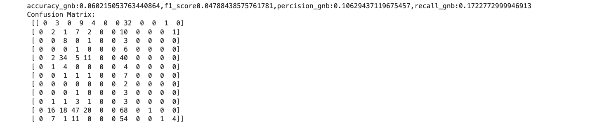 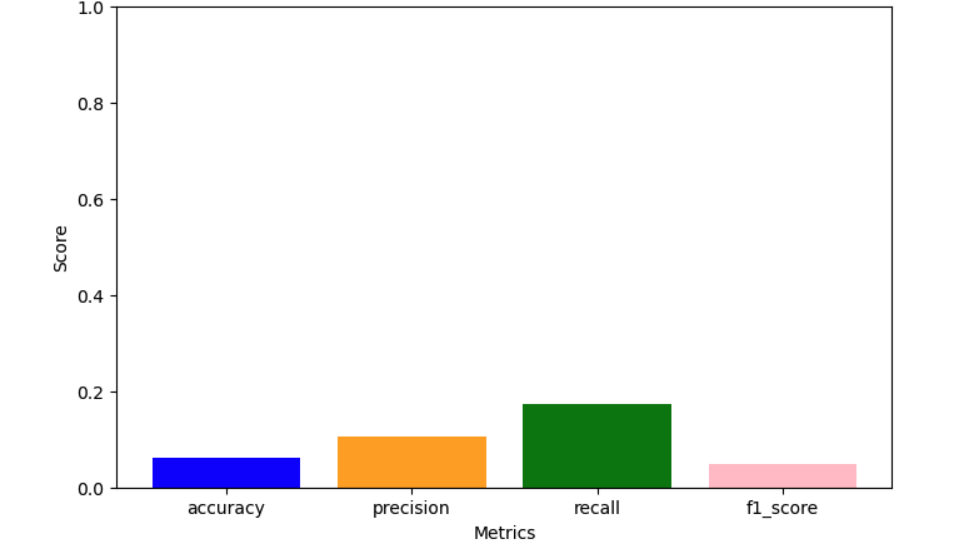
2. Multinomial NB is effective for discrete features like soil type.
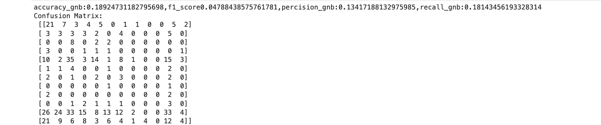 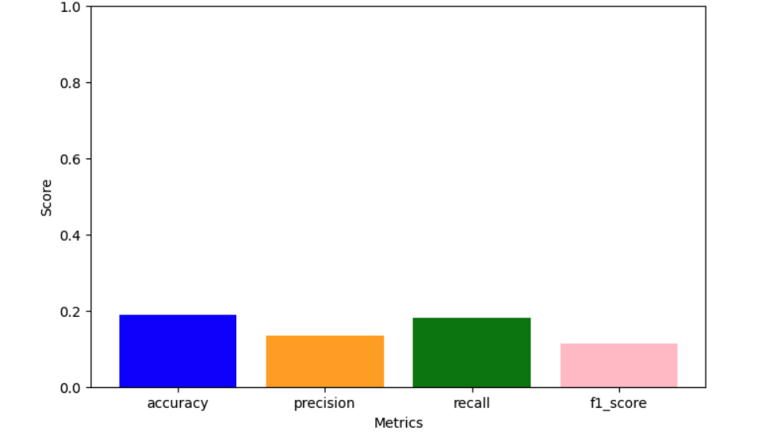
3. Bernoulli NB.
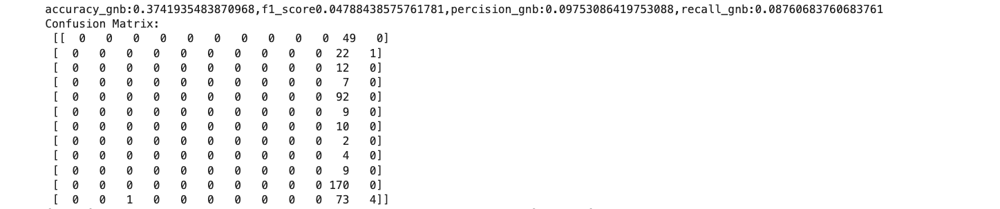 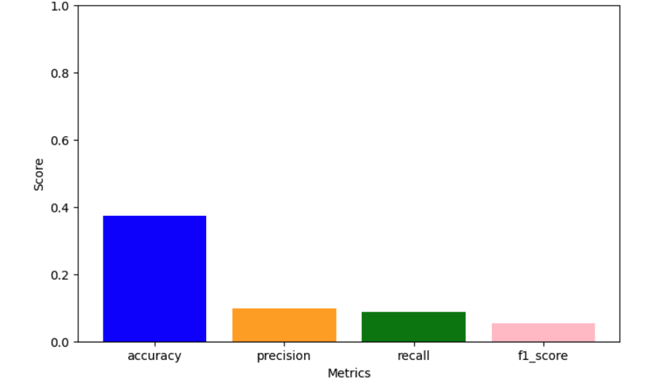
4. Categorical NB is ideal for categorical features like soil color.
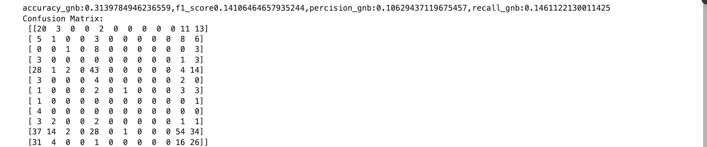 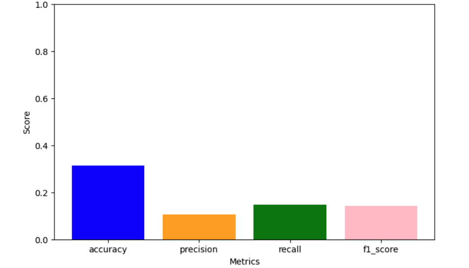
(e) Conclusions
Naive Bayes is a simple yet reliable classifier. It would be fine if we have the assumption of independence. Gaussian NB was suitable for continuous features, and Multinomial NB was suitable for discrete features, while Categorical NB was suitable for categorical features.
The models can be utilized to classify crop suitability based on soil and climate information to help farmers make intelligent decisions.
Supervised learning: Decision Trees
(a) Overview
Decision Trees (DTs) are a classification as well as regression method used in supervised learning. DTs partition the data according to feature values and construct a tree-based model. DTs are interpretable in nature and are able to process categorical as well as continuous data.
Main Ideas:
Gini Index: This is a measure of a node's impurity. In Gini, lower is desirable.
Entropy: It quantifies the randomness of information. Low entropy implies good splits.
Information Gain: The reduction of entropy after a split. The greater the information gain, the better the split.
Example of Gini and Information Gain:
I choose "Barley" and "Bean".
Gini Index before split: 0.5.
Gini Index after split: 0.2
Information Gain = 0.5 - 0.2 = 0.3.
Infinite Trees:
We can generate an unlimited number of trees by repeatedly partitioning the data. This will result in overfitting. We can prevent this by limiting tree depth or pruning.
(b) Data Prep:
Using the same dataset as Naive Bayes.
Spliting the data into training and testing sets.
Ensure the split is disjoint to avoid data leakage.
Image of the dataframe used.Dataframe too long to fit in this image.
1. Accuracy Scores: Comparing the accuracy of the trees.
2. Confusion Matrices: Displaying the confusion matrices for each tree.
3. Tree Visualizations: Include visualizations of at least three different trees with different root nodes.
Observations:
Decision Tree 1 (gini, max_depth=5)
Evaluation Metrics:
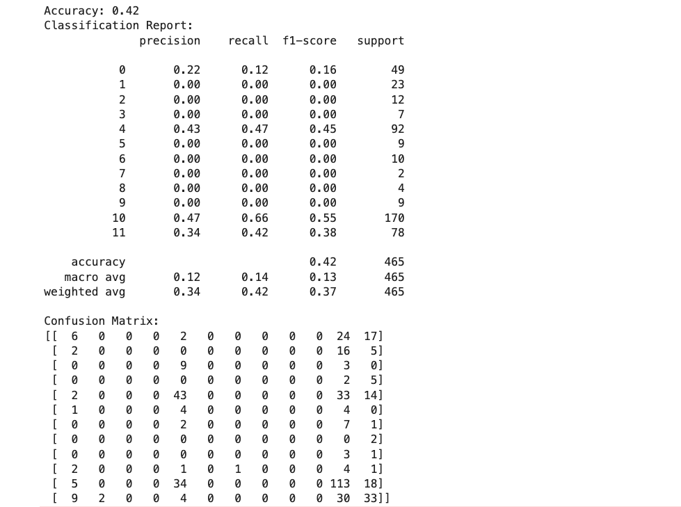
Decision tree plot:
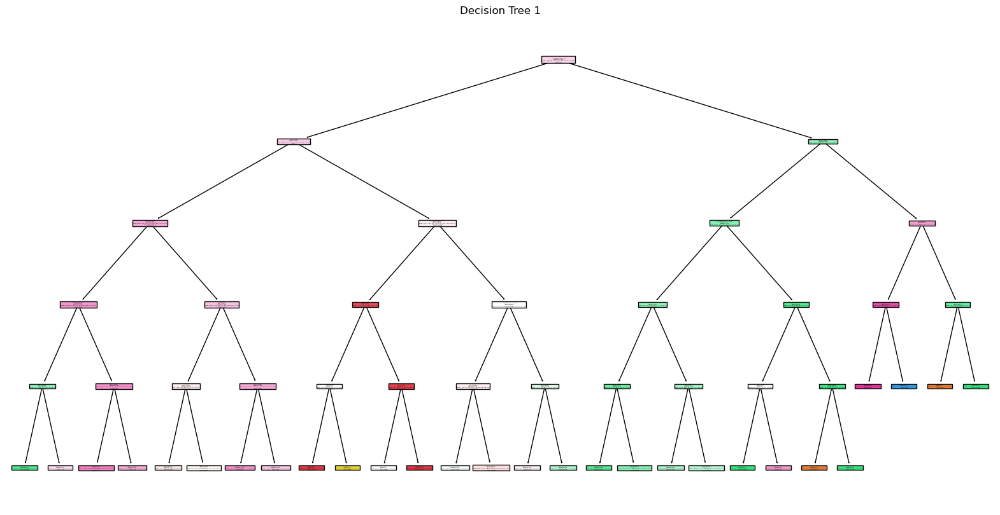
Decision Tree 2 (gini, max_depth=3)
Evaluation Metrics:
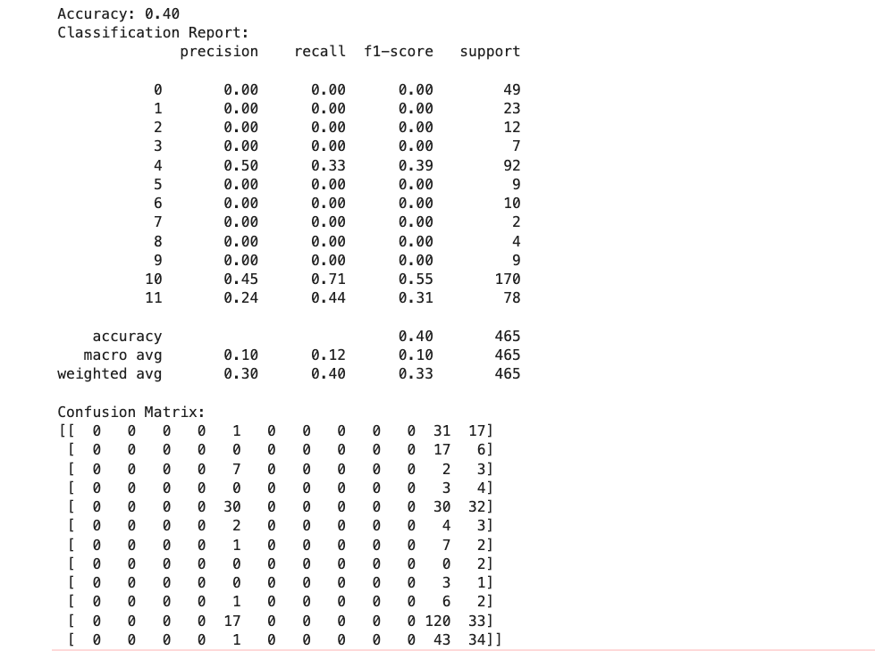
Decision tree plot:
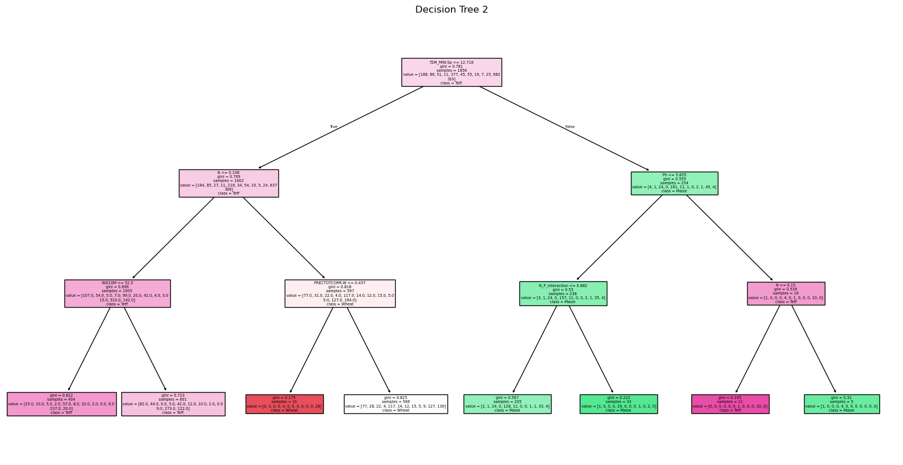
Decision Tree 3 (entropy, max_depth=4)
Evaluation Metrics:
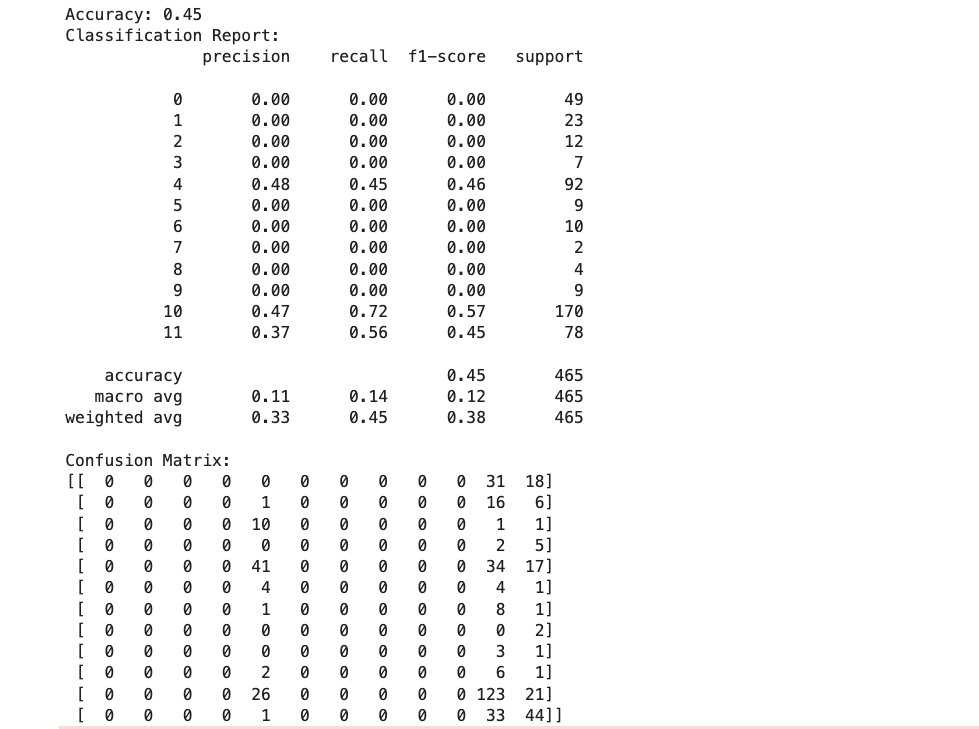
Decision tree plot:
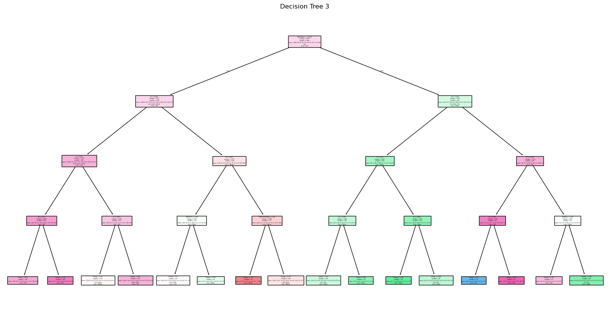
Max_depth =4 and criterion = entropy gave the highest accuracy.
(e) Conclusions
Decision Trees are explainable and are good for both continuous and categorical data. Decision Trees can be applied to discover the most influential features in crop suitability prediction.
They overfit, but it is possible to evade it by limiting tree depth or by pruning.
Supervised learning: Regression
(a) Define and explain linear regression.
Linear regression is a supervised learning model used to predict a continuous target variable. It illustrates the relationship between the target variable and one or more feature variables by fitting the data into a linear equation.
(b) Define and explain logistic regression.
Logistic regression is a supervised classifier for binary classification tasks. Logistic regression predicts a class probability through the use of the sigmoid function, which scales predictions onto the range 0 to 1.
(c) In how many ways are they alike, and in how many are they different?
Similarities:
Both are linear models.
Both utilize optimization routines to reduce loss functions.
Differences:
Linear regression predicts continuous values, but logistic regression predicts probabilities in classification.
Logistic regression uses the sigmoid function but linear regression does not.
(d) Does logistic regression use the Sigmoid function? Why?
Yes, logistic regression uses the sigmoid function to map predictions onto probabilities between 0 and 1. The sigmoid function ensures that the output can be understood as a probability.
(e) Explain how maximum likelihood is connected to logistic regression.
Logistic regression uses maximum likelihood estimation (MLE) to find parameters that maximize the likelihood of observed data. MLE guarantees the model's prediction is as close to the true data as possible.
Simple comparision of all 3 models:
1. Naive Bayes: Performs well with categorical and discrete features.
2. Decision Trees: Effective for both categorical and continuous data but prone to overfitting.
3. Logistic Regression: Ideal for binary classification tasks with continuous features.
Coding: Comparing Logistic regression analysis and Multinomial Naive Bayes Classifiers
Image of the updated dataframe of two labels (Beans and Barley).
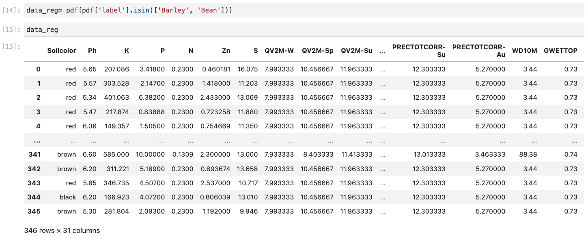
1.Logistic regression for updated 2 label dataset: Accuracy, classification report and confusion matrix below.
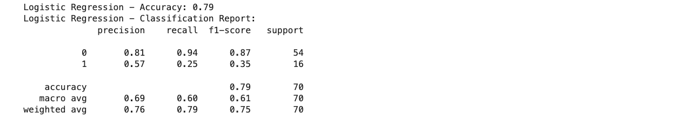
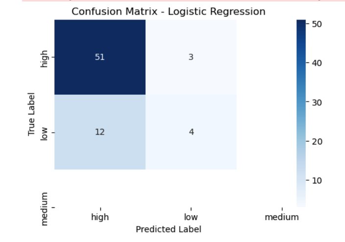
2. Naive bayes for updated 2 label dataset: Accuracy, classification report and confusion matrix below.
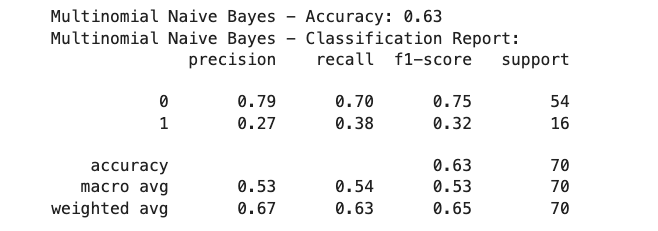
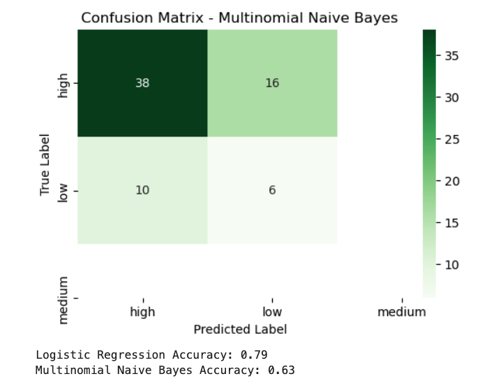